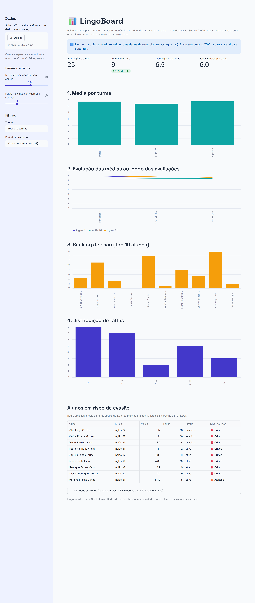
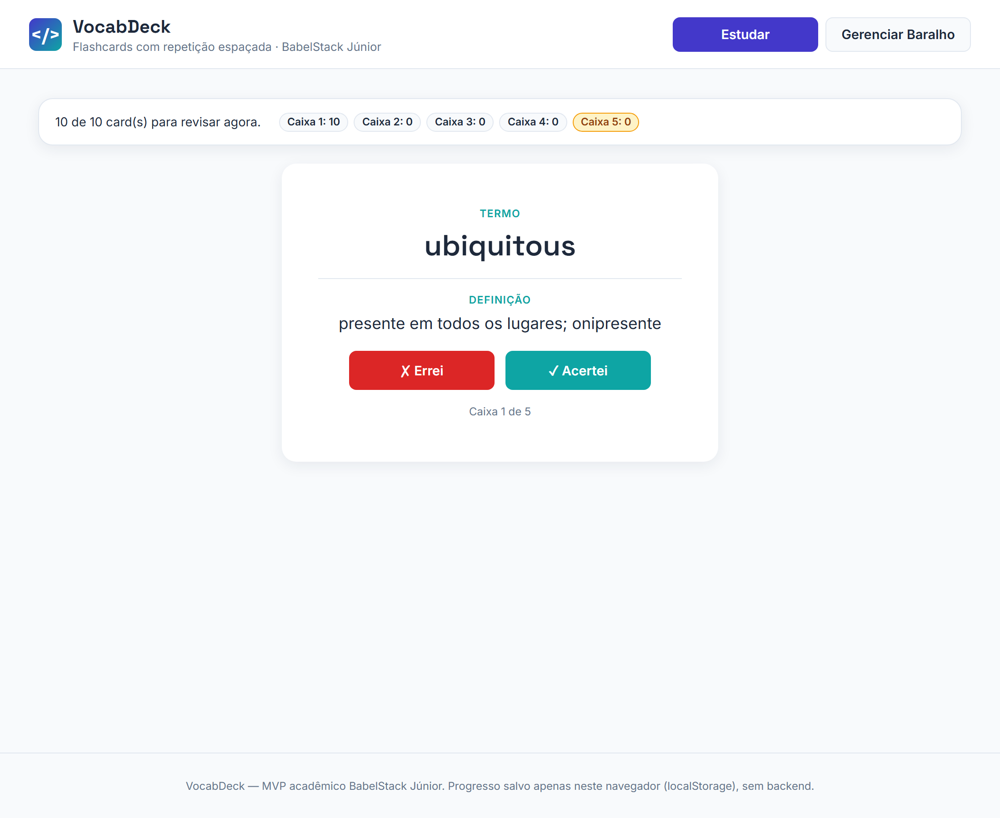
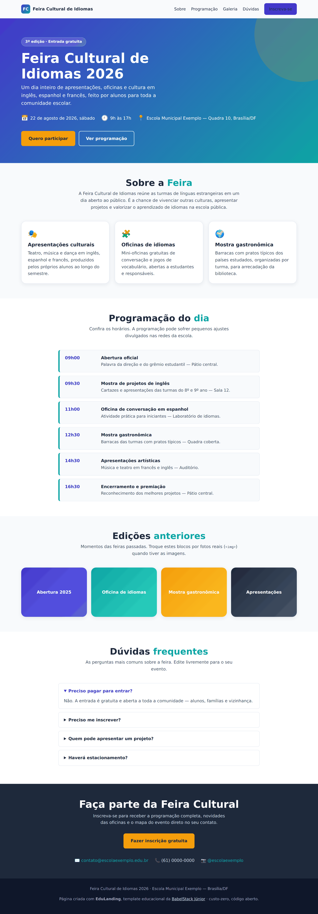
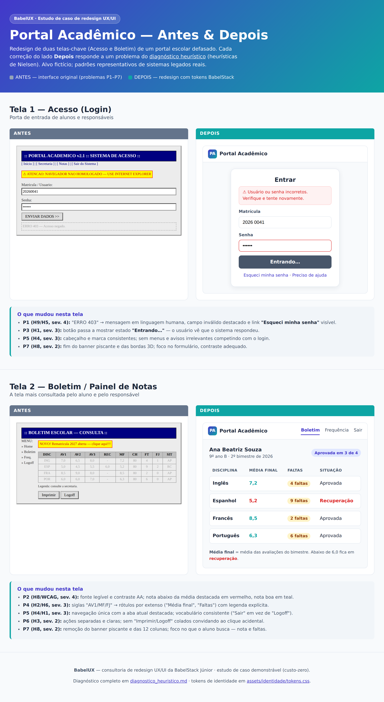
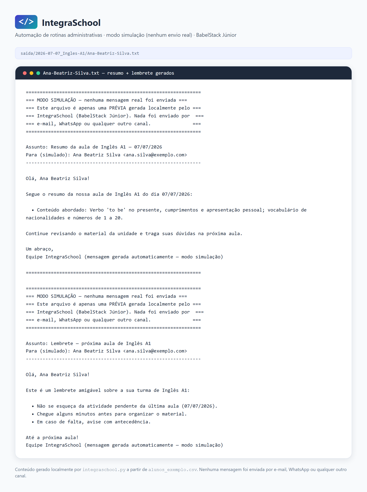

Soluções em EdTech — Plano de Negócios
"Codificando fluência, estruturando conexões globais."
Raquel Pereira — CPO · Diretoria Executiva e de Produto | Roger Quinelato — CTO · Diretoria de Engenharia
+ Demo dos 5 produtos e encerramento/perguntas.
Nome: BabelStack Júnior – Soluções em EdTech
Área: EdTech — Engenharia de Software, BI e UX/UI aplicados ao ensino de idiomas
Natureza: associação civil sem fins lucrativos, gerida por estudantes (Lei nº 13.267/2016)
Missão: democratizar o ensino de idiomas com tecnologia orientada a dados
Visão: referência em EdTech no Centro-Oeste até o fim de 2027
Valores: design centrado no aluno, decisões orientadas a dados, escalabilidade multidiomas, colaboração
Portfólio de 5 produtos, cada um endereçando uma dor específica da sala de aula:
Dashboards de BI para evasão e desempenho
Flashcards com revisão espaçada
Landing pages educacionais
Redesign de interfaces (UX/UI)
Automação de rotinas administrativas
Hiper-especialização em EdTech de idiomas, stack open-source, DNA jovem
Impacto social: programa "Código Fluente" — a cada 3 projetos pagos, 1 sistema gratuito para escola pública.
Pesquisa de mercado, capacitação da dupla, projetos-piloto na rede pública
Sustentabilidade financeira, expansão para espanhol/francês, evolução para fullstack
Análise preditiva de evasão, parcerias com centros de línguas universitários
| Camada | Responsável | Atribuições |
|---|---|---|
| Conselho de Orientação | Professores orientadores | Mentoria técnica e pedagógica |
| CPO — Diretoria Exec. e de Produto | Raquel Pereira | Gestão comercial, requisitos, UX/UI, BI |
| CTO — Diretoria de Engenharia | Roger Quinelato | Desenvolvimento web, automação, arquitetura, operações |
Anexo: organograma em diagramas/organograma.svg
Público-alvo: setor público (validação/impacto) e setor privado (monetização — escolas de idiomas, professores particulares)
Concorrentes diretos: outras empresas juniores de TI; indiretos: LMS/EdTechs consolidadas (Moodle, Geekie, Agenda Edu)
Oportunidades: forte aderência open-source no setor público, alta demanda por BI de retenção, arquitetura multidiomas replicável
Ameaças: equipe de 2 pessoas, curva de infraestrutura, resistência docente à digitalização
| # | Produto | Categoria | Valor privado |
|---|---|---|---|
| 1 | LingoBoard | Dashboards (BI) | R$ 800–2.000 |
| 2 | VocabDeck | Flashcards web | R$ 1.500–3.000 |
| 3 | EduLanding | Sites educacionais | R$ 600–1.800 |
| 4 | BabelUX | Redesign UX/UI | R$ 500–1.500 |
| 5 | IntegraSchool | Automação administrativa | R$ 700–2.000 |
Para escolas públicas os 5 serviços são gratuitos (projeto social). Demo detalhada dos produtos ao final do deck.
Anexo: fluxograma de atendimento ponta-a-ponta (diagramas/fluxograma_atendimento.svg)
Metodologia Bootstrapping — laboratórios da universidade, software open-source e nuvem gratuita.
| Item | Valor |
|---|---|
| Capital inicial | R$ 0,00 |
| Custos fixos | R$ 40,00/ano (domínio; hospedagem em planos gratuitos) |
| Custos variáveis | R$ 50–150/mês |
| Receita estimada | R$ 3.000–6.000 no 1º semestre |
| Risco | Categoria | Mitigação |
|---|---|---|
| Inadimplência | Financeiro | 50% na assinatura do contrato |
| Conflito com calendário acadêmico | Operacional | Pausa programada no fechamento de semestre |
| Resistência tecnológica | Mercado | Manuais em vídeo, foco em UX simples |
| Perda de código/servidor | Tecnológico | Versionamento no GitHub + backup semanal |
Anexo: ERD do banco PostgreSQL (diagramas/erd_babelstack.svg) · PRDs, TDD e ADRs em docs/produtos e docs/adr
| Semana | Foco |
|---|---|
| 1 (16–22/06) | Fundação e identidade visual |
| 2 (23–29/06) | Mercado, estrutura e portfólio |
| 3 (30/06–06/07) | Planos e esqueleto do site |
| 4 (07–13/07) | Build técnico I — site, VocabDeck, LingoBoard |
| 5 (14–20/07) | Build técnico II e marketing |
| 6 (21–24/07) | Montagem e 1ª apresentação (24/07) |
| 7 (25–31/07) | Ajustes e entrega final (31/07) |
Anexo: gráfico de Gantt (diagramas/gantt_cronograma.svg)

Painel de BI — evasão e desempenho por turma

Flashcards com repetição espaçada (Leitner)

Landing "Feira Cultural de Idiomas"

Redesign — comparativo Antes/Depois do Portal Acadêmico

Automação — resumos e lembretes em modo simulação
Stack open-source, custo-zero, pronta para demo ao vivo
Perguntas?
Raquel Pereira — CPO | Roger Quinelato — CTO
BabelStack Júnior · github.com/Roger-Quinelato/EST-GIO_EMPRESARIAL_II